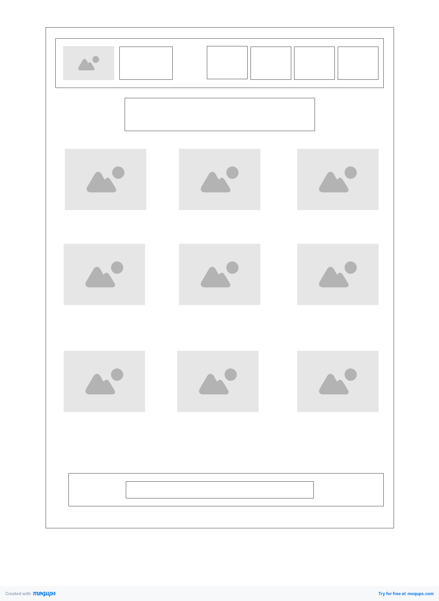
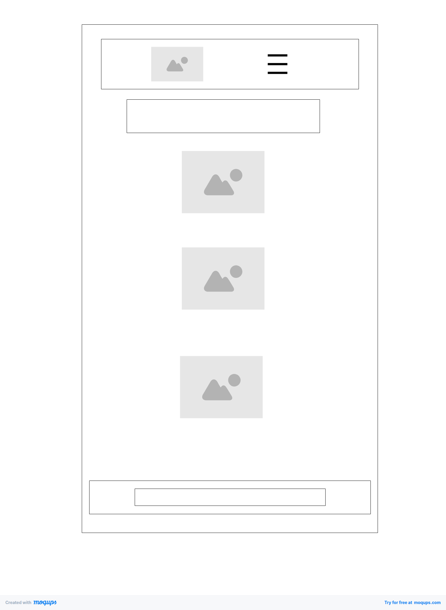

Tara: Kape sa Katipunan
This name represents the concept of a peaceful community where people can gather, relax, enjoy a cup of coffee, and connect with others in a warm and welcoming environment.
Site Purpose
The purpose of this website is to provide a platform for a local coffee shop to showcase its offerings, events, and community involvement. It aims to create a digital space where customers can learn more about the shop, its history, and its role in the community.
Scenarios
- Which coffee shops in Katipunan offer a calm, welcoming environment where visitors can enjoy coffee in a peaceful and comfortable setting?
- Which coffee shops in Katipunan provide a warm atmosphere that encourages conversation, connection, and community over a cup of coffee?
Color Schema
- Warm Cream (#F5EFE6) - Use for backgrounds
- Espresso Brown (#3B2F2F) - Use for texts
Typography
- PT Serif - Use for headings
- Lora - Use for body text
Wireframes
- Mobile View 
- Desktop View 